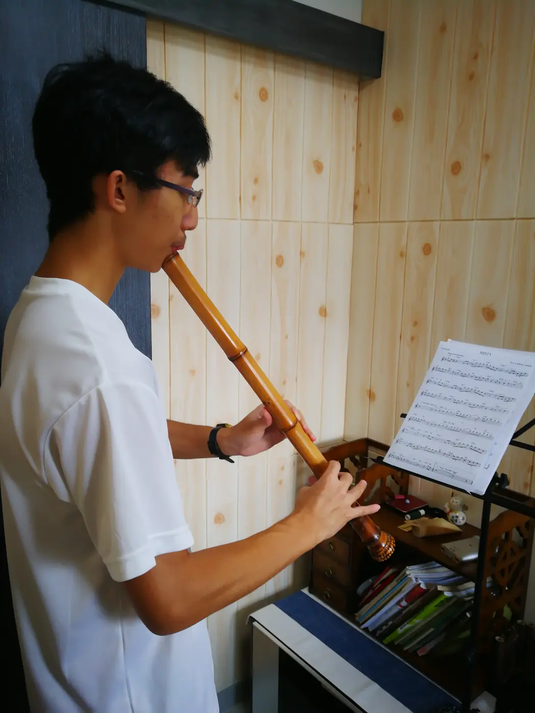

簫2 分鐘
洞簫第一個音：在氣聲裏找一條清楚的線
初次吹洞簫，聽見的可能只有風。第一個音不需要靠猛吹換來，較有用的是小幅度調整吹口角度，找出氣流開始形成聲音的位置。每次停一停再試，比一口氣吹到疲倦更容易保留感覺。

洞簫學習重視自然發聲、持握、音準與樂句。由可重複的短音開始，逐步延伸長音、換氣與旋律，讓從容建立在清楚的方法之上。
適合喜歡洞簫音色、願意細聽與慢練的成人及學生。學過竹笛或長笛的學員，可運用已有讀譜與聽覺經驗，同時重新調整吹口與持握。
選簫需看吹口、孔距、音域與手感。已有樂器可先帶同評估；尚未購買，先討論適合的規格與學習方向。
練習不必以吹得最長為目標。每次選音頭、音中或句尾其中一項觀察，保持舒服長度；晚間不便出聲，可改做讀譜和聆聽。
簫2 分鐘
初次吹洞簫，聽見的可能只有風。第一個音不需要靠猛吹換來，較有用的是小幅度調整吹口角度，找出氣流開始形成聲音的位置。每次停一停再試，比一口氣吹到疲倦更容易保留感覺。
簫2 分鐘
吹完一句，房間裏還有餘音。洞簫的留白可以讓人聽見旋律的尾巴，但若每次停多久都沒有方向，音樂也可能失去連貫。練習留白，要清楚下一句何時、以甚麼心情回來；任意放慢並不算留白。


查詢時可提供年齡、已有經驗、現有樂器與可上課時間，也可以說說最想學的一首曲。